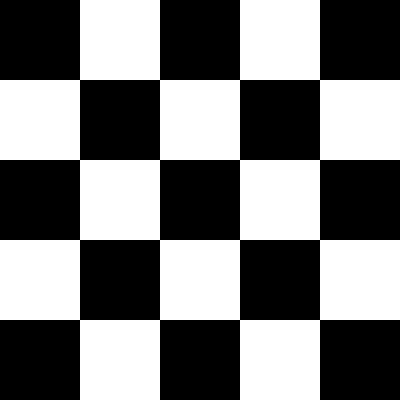

<!DOCTYPE html>
<html>

<head>
    <meta content="text/html;charset=utf-8" http-equiv="Content-Type">
    <meta content="utf-8" http-equiv="encoding">
    <meta name="viewport" content="width=device-width, initial-scale=1.0">

    <script src="jsPsych-main/jspsych.js"></script>
    <script src="jspsych-psychophysics-master/jspsych-psychophysics.js"></script>
    <script src='jsPsych-main/plugins/jspsych-html-keyboard-response.js'></script>
    <script src='jsPsych-main/plugins/jspsych-fullscreen.js'></script>
    <script src="jsPsych-main/plugins/jspsych-external-html.js"></script>
    <script src="jsPsych-main/plugins/jspsych-survey-multi-select.js"></script>
    <script src="jsPsych-main/plugins/jspsych-instructions.js"></script>
    <script src="jsPsych-main/plugins/jspsych-survey-text.js"></script>
    <script src="jsPsych-main/plugins/jspsych-survey-multi-select.js"></script>
    <script src="jsPsych-main/plugins/jspsych-survey-multi-choice.js"></script>
    <script src="jsPsych-main/plugins/jspsych-call-function.js"></script>
    <link href="jsPsych-main/css/jspsych.css" rel="stylesheet">


    <link rel="preload" as="font" href="supportFiles/BACS_fonts/BACS_fonts/BACS1.otf" type="font/otf"
        crossorigin="anonymous">
    <link rel="preload" as="font" href="supportFiles/BACS_fonts/BACS_fonts/BACS2sans.otf" type="font/otf"
        crossorigin="anonymous">

    <style type="text/css">
        @font-face {
            font-family: BACS1;
            src: url(supportFiles/BACS_fonts/BACS_fonts/BACS1.otf) format("opentype");
        }

        @font-face {
            font-family: BACS2;
            src: url(supportFiles/BACS_fonts/BACS_fonts/BACS2sans.otf) format("opentype");
        }

        .bacs1 {
            font-family: 'BACS1';
            font-size: 100%;
            text-align: 'center';
            color: black;
            text-anchor: middle;
        }

        .bacs2 {
            font-family: 'BACS2';
            font-size: 100%;
            text-align: 'center';
            color: black;
            text-anchor: middle;
        }
    </style>
</head>

<body></body>
<script>

    /*Changelog
    9-17-21:    Updated VDACrest to allow users to exit with 'g' while timer counts down
    9-20-21:    Tabulated trial counts
                Fixed VDACrest to have seperate feedback and timer screens
                Added letter randomization to memTest, same method as before
                Made Demo Version
                Made seperate stimulus prompts for memory test training
                Fixed bug with cndDwnArr
    9-21-21:    Attempting to make condensed data output
    9-27-21:    Updated End Screen
                Updated Debriefing Form
                Updating condensed data output
    9-28-21:    Updating condensed data output
                Make rwdType a function of cntbalance and tgtCol
    9-29-21:    Made Seperate programs for r and g counterbalance conditions
                Updated Screen Size
    01-04-21:   Revised VDACtrial using psychophysics plugin
    01-05-21:   Revised RSVPtrial using psychophysics plugin   
    
    To do List
    */

    //SETUP//
    //Generates ID, sets counterbalance condition, keypresses, start date, & screen dimensions
    document.body.style.backgroundColor = 'gray';
    const date = new Date();
    var stDate = date.getMonth() + '-' + date.getDate();
    var subID = jsPsych.randomization.randomID(3);
    var cntBalance = ['r'];
    var fileName = cntBalance + '-' + stDate + '-' + subID
    var keys = ['z', 'm']
    var trialNum = 1
    var wd = window.innerWidth * .95
    var ht = window.innerHeight * .95

    jsPsych.data.addProperties(
        {
            subject: subID,
            condition: cntBalance
        }
    )

    var dataOut = {
        subID: [],
        trialType: [],
        trialNum: [],
        cntBalance: [],
        correct: [],
        rt: [],
        rwdType: [], //reward type: high/low/none
        tgtCol: [], //trarget color: red/green/black
        tgtDir: [], //target direction: horizontal/vertical
        tgtPos: [], //position of target item: 1, 2, 3, none
        colPos: [], //position of colored item
        colMatch: [] //does colPos match tgtPox?
    }

    //CONSENT & DEMOGRAPHICS//
    var fullSrc = {
        type: 'fullscreen',
        fullscreen_mode: true,
    }

    var fixationStim = [{
        obj_type: 'line',
        startX: 0,
        startY: 0,
        line_length: 50,
        angle: 0,
        line_width: 5,
        line_color: 'black',
        origin_center: true,
    }, {
        obj_type: 'line',
        startX: 0,
        startY: 0,
        line_length: 50,
        angle: 90,
        line_width: 5,
        line_color: 'black',
        origin_center: true,
    }]

    function drawVDACtest(tgtPos, tgtCol, tgtDir) {
        var cX = [.26 * ht, .0 * ht, -.26 * ht, -.26 * ht, .0 * ht, .26 * ht]
        var cY = [.15 * ht, .30 * ht, .15 * ht, -.15 * ht, -.30 * ht, -.15 * ht]
        var cR = [.1 * ht, .09 * ht]

        var colArr = jsPsych.randomization.shuffle(['cyan', 'blue', 'black', 'magenta', 'yellow']);
        if (tgtCol == 'r') {
            colArr.splice(tgtPos, 0, 'red')
        } else if (tgtCol == 'g') {
            colArr.splice(tgtPos, 0, 'lime')
        }

        var angle = [];
        for (let i = 0; i < 5; i++) {
            if (Math.random() < 0.5) {
                angle[i] = 45
            } else {
                angle[i] = -45
            }
        }

        if (tgtDir == 'h') {
            angle.splice(tgtPos, 0, '90')
        } else if (tgtDir == 'v') {
            angle.splice(tgtPos, 0, '0')
        }

        var arrVDACstim = []
        arrVDACstim = arrVDACstim.concat(fixationStim);
        for (i = 0; i < 6; i++) {
            arrVDACstim.push({
                obj_type: 'circle',
                startX: cX[i], // location in the canvas
                startY: cY[i],
                radius: cR[0],
                line_color: colArr[i],
                fill_color: 'grey',
                line_width: 7,
                origin_center: true,
            }, {
                obj_type: 'line',
                startX: cX[i], // location in the canvas
                startY: cY[i],
                line_length: 50,
                line_width: 5,
                angle: angle[i],
                line_color: 'black',
                origin_center: true,
            }
            )
        }
        return arrVDACstim
    }

    //'Press ' + keys[0] + ' for horizontal or ' + keys[1] + ' for vertical',

    function drawVDACtrain(tgtPos, tgtCol, tgtDir) {
        var arrVDACstim = drawVDACtest(tgtPos, tgtCol, tgtDir)
        arrVDACstim.push({
            obj_type: 'text',
            startX: 'center',
            startY: .95 * ht,
            content: 'Press ' + keys[0] + ' for horizontal or ' + keys[1] + ' for vertical',
            show_end_time: 2000 // disappear this text
        })
        return arrVDACstim
    }

    function drawInstruct(x, y, colArr, angle) {
        var svg = [
            '<svg x="0" y="0" width="700" height="700" viewBox="0 0 100 100" >' +
            '<path d="M 50 52 L 50 48" stroke="black" stroke-width=".5"/> <path d="M 52 50 L 48 50" stroke="black" stroke-width=".5"/>'
        ]

        for (let i = 0; i < 6; i++) {
            svg.push(
                '<circle cx="50" cy="50" r="10" fill="none" transform="translate(' + x[i] + ' ' + y[i] + ')" stroke="' + colArr[i] + '" />' +
                '<path d="M 50 57 L 50 43" stroke="black" transform="translate(' + x[i] + ' ' + y[i] + ') rotate(' + angle[i] + ' 50 50)"/>'
            );
        };
        return svg
    }

    var VDACinstructions = {
        type: 'instructions',
        pages: [
            '<div style= "font-size:20px;" <p> <strong> Welcome to the experiment! </strong><br> <p style="color:red; font-size:25px;"> Please do NOT exit full screen until you are done with the experiment. </p>' +
            '<p style="color:red;"> The experiment will be canceled and your data will be lost if you try to go back or refresh the page at any time during the experiment.</p>' +
            '<p style="color:red;"> Please rely on your memory and do NOT write anything down throughout the experiment. </p>' +
            '<br>' +
            '<p style="color:black;">Click next or use the arrow keys to proceed.</p> </span>'
            ,
            'In this task, your job is to detect either a horizontal line or a vertical line among five other diagonal lines.  Each trial will begin with a + symbol in the center of the screen. You should focus your eyes on that + symbol. Then six differently colored circles will appear. Each one will have a line inside of them.' +
            '<p>Your target—the horizontal or vertical line—will always be inside a red or green circle. You should press <b>' + keys[0] + '</b> if the line is horizontal or <b>' + keys[1] + '</b> if the line is vertical. You will see examples on the following pages.' +
            '<p>Click next or use the arrow keys to proceed.</p>'
            ,
            ''
            ,
            drawInstruct(
                [26, 0, -26, -26, 0, 26],
                [15, 30, 15, -15, -30, -15],
                ['cyan', 'blue', 'black', 'red', 'magenta', 'yellow'],
                ['-45', '45', '45', '90', '45', '-45']
            ) +
            '<text font-size="15%" text-anchor="middle"  x="24" y="20">This is your target.</text>' +
            '</svg>' +
            '<p>Press ' + keys[0] + ' for horizontal or ' + keys[1] + ' for vertical</p>' +
            '<p>Click next or use the arrow keys to proceed.</p>'
            ,
            '<svg viewBox="0 0 100 60" >' +
            '<text font-size="10%" text-anchor="middle"  x="24" y="17 ">Horizontal line.</text>' +
            '<text font-size="10%" text-anchor="middle"  x="50" y="3 ">Determine the orientation of the line inside the target.</text>' +
            '<text font-size="10%" text-anchor="middle"  x="24" y="20">Press the ' + keys[0] + ' key.</text>' +
            '<text font-size="10%" text-anchor="middle"  x="76" y="17">Vertical line.</text>' +
            '<text font-size="10%" text-anchor="middle"  x="76" y="20">Press the ' + keys[1] + ' key.</text>' +
            '<path stroke-width=".5" d="M 50 10 L 50 50" stroke="black"/>' +
            '<circle cx="50" cy="50" r="10" fill="none" transform="translate( 26  -15)" stroke="red" />' +
            '<circle cx="50" cy="50" r="10" fill="none" transform="translate(-26  -15)" stroke="red" />' +
            '<path d="M 50 57 L 50 43" stroke="black"   transform="translate( 26  -15) rotate(0 50 50)"/>' +
            '<path d="M 50 57 L 50 43" stroke="black"   transform="translate(-26  -15) rotate(90 50 50)"/>' +
            '<text font-size="9%" text-anchor="middle"  x="50" y="57">Click next or use the arrow keys to proceed.</text>'
            ,
            '<svg viewBox="0 0 100 60" >' +
            '<text font-size="10%" text-anchor="middle"  x="24" y="17 ">Horizontal line.</text>' +
            '<text font-size="10%" text-anchor="middle"  x="50" y="3 ">Targets will be red or green.</text>' +
            '<text font-size="10%" text-anchor="middle"  x="24" y="20">Press the ' + keys[0] + ' key.</text>' +
            '<text font-size="10%" text-anchor="middle"  x="76" y="17">Vertical line.</text>' +
            '<text font-size="10%" text-anchor="middle"  x="76" y="20">Press the ' + keys[1] + ' key.</text>' +
            '<path stroke-width=".5" d="M 50 10 L 50 50" stroke="black"/>' +
            '<circle cx="50" cy="50" r="10" fill="none" transform="translate( 26  -15)" stroke="lime" />' +
            '<circle cx="50" cy="50" r="10" fill="none" transform="translate(-26  -15)" stroke="lime" />' +
            '<path d="M 50 57 L 50 43" stroke="black"   transform="translate( 26  -15) rotate(0 50 50)"/>' +
            '<path d="M 50 57 L 50 43" stroke="black"   transform="translate(-26  -15) rotate(90 50 50)"/>' +
            '<text font-size="9%" text-anchor="middle"  x="50" y="57">Click next or use the arrow keys to proceed.</text>'
            ,
            drawInstruct(
                [26, 0, -26, -26, 0, 26],
                [15, 30, 15, -15, -30, -15],
                ['lime', 'blue', 'yellow', 'black', 'cyan', 'magenta'],
                ['90', '-45', '45', '-45', '-45', '45']
            ) +
            '</svg>' +
            '<p>The target will appear in any one of six locations.</p>' +
            '<p>Click next or use the arrow keys to proceed.</p>'
            ,
            drawInstruct(
                [26, 0, -26, -26, 0, 26],
                [15, 30, 15, -15, -30, -15],
                ['black', 'red', 'yellow', 'cyan', 'magenta', 'blue',],
                ['45', '0', '-45', '45', '-45', '45']
            ) +
            '</svg>' +
            '<p>The target will appear in any one of six locations.</p>' +
            '<p>Click next or use the arrow keys to proceed.</p>'
            ,
            drawInstruct(
                [26, 0, -26, -26, 0, 26],
                [15, 30, 15, -15, -30, -15],
                ['cyan', 'black', 'yellow', 'blue', 'magenta', 'lime'],
                ['-45', '45', '-45', '45', '45', '90']
            ) +
            '</svg>' +
            '<p>The target will appear in any one of six locations.</p>' +
            '<p>Click next or use the arrow keys to proceed.</p>'
            ,
            '<p>You will earn points when you are correct and respond quickly enough. If you are wrong or respond too slowly, you will see “Miss” in your screen and you will not earn any points. You will earn either 10 points or 2 points when you are correct. You should try to earn as many points as you can.</p>' +
            '<p>If you understand these instructions, click next or use the arrow keys to proceed and you will be given 10 practice trials. You will be given the option to review these instructions and repeat the training exercise again before starting the experiment.</p>'
            ,
        ],
        on_start: function () {
            document.body.style.cursor = "default";
        },
        show_clickable_nav: true,
        show_page_number: true,
        on_finish: function () {
            document.body.style.cursor = 'none'
        },
    }


    //Countdown to start experiment. Timeline prompt starts in cntDwnArr. 1 second prompts with countdown are pushed into cntDwnArr 
    var cntDwnArr = [
        {
            type: "html-keyboard-response",
            stimulus: '<p>Place your fingers on the <b>' + keys[0] + '</b> and <b>' + keys[1] + '</b> keys. ' +
                'The experiment will begin shortly.</p> <p></p>',
            trial_duration: 3000,
            choices: ['p']
        }
    ];
    for (let i = 5; i > 0; i--) {
        cntDwnArr.push(
            {
                type: "html-keyboard-response",
                stimulus: '<p>Place your fingers on the <b>' + keys[0] + '</b> and <b>' + keys[1] + '</b> keys. ' +
                    "</b>The experiment will begin shortly.</p><p>" + i + "</p>",
                trial_duration: 1000,
                choices: ['p']
            }
        )
    }
    var cntDwnTimer = {
        timeline: cntDwnArr
    }

    var fixation = {    //Generates fixation cross for 400 - 1000 ms
        type: 'psychophysics',
        trial_duration: Math.random() * (600 - 400) + 400,
        stimuli: fixationStim,
        data: jsPsych.timelineVariable('data'),
        canvas_width: wd,
        canvas_height: ht,
    }

    var VDACtrial = {
        type: 'psychophysics',
        choices: [keys[0], keys[1]],
        trial_duration: 1000,      //TESTTESTTEST ORIGINAL 1000
        stimuli: jsPsych.timelineVariable('stimulus'),
        data: jsPsych.timelineVariable('data'),
        canvas_width: wd,
        canvas_height: ht,
        on_finish: function (data) {
            var correct = null;
            if (data.tgtDir == 'h' && jsPsych.pluginAPI.compareKeys(data.response, keys[0]) || data.tgtDir == 'v' && jsPsych.pluginAPI.compareKeys(data.response, keys[1])) {
                correct = true
            } else if (data.tgtDir == 'h' && jsPsych.pluginAPI.compareKeys(data.response, keys[1]) || data.tgtDir == 'v' && jsPsych.pluginAPI.compareKeys(data.response, keys[0])) {
                correct = false;
            }
            data.correct = correct;

            if (data.trialType == 'VDACtest') {
                dataOut.trialNum.push(trialNum)
                trialNum++
            } else {
                dataOut.trialNum.push(0)
            }

            if (data.tgtCol == cntBalance[0]) {
                dataOut.rwdType.push(2)
                data.rwdType = 'high'
            } else {
                dataOut.rwdType.push(1)
                data.rwdType = 'low'
            }

            dataOut.subID.push(data.subject)
            dataOut.trialType.push(data.trialType)
            dataOut.cntBalance.push(data.condition)
            dataOut.correct.push(data.correct)
            dataOut.rt.push(data.rt)
            dataOut.tgtCol.push(data.tgtCol)
            dataOut.tgtPos.push(data.tgtPos)
            dataOut.tgtDir.push(data.tgtDir)

            dataOut.colPos.push('')
            dataOut.colMatch.push('')

        },
        post_trial_gap: 1000, //TESTTESTTEST ORIGINAL 1000
    }

    var fdbkCor = '<p style="font-size:300%;">Correct!</p>'
    var fdbkWrg = '<p style="font-size:300%;">Miss.</p> <p style="font-size:300%;">Wrong response.</p>'
    var fdbkTime = '<p style="font-size:300%;">Miss.</p> <p style="font-size:300%;">Too slow.</p>'
    var fdbkMiss = '<p style="font-size:300%;">Miss.</p>'
    var rwdTotal = Math.round(0)

    var fdbkNoPts = {
        type: 'html-keyboard-response',
        stimulus: function () {
            if (jsPsych.data.getLastTrialData().values()[0].correct == true) {
                return fdbkCor
            } else if (jsPsych.data.getLastTrialData().values()[0].correct == false) {
                return fdbkWrg
            } else if (jsPsych.data.getLastTrialData().values()[0].correct == null) {
                return fdbkTime
            }
        },
        choices: jsPsych.NO_KEYS,
        trial_duration: 1500,
        post_trial_gap: 1000,
    }

    /*Shows feedback according to data.correct and rwdType. Assigns rewardTrial to 2. If rwdType is 'low', there's an 20% chance rewardTrial will be 10.
    If wedType is 'high' 80% chance rewardTrial will be 10.
    After correct or wrong response, adds a 0 to attCount and shifts the array.
    After null response, adds a 1 to attCount and shifts the array.
    */
    var fdbkPts = {
        type: 'html-keyboard-response',
        stimulus: function (data) {
            var rewardTrial = 2
            if (jsPsych.data.getLastTrialData().values()[0].correct == true && jsPsych.data.getLastTrialData().values()[0].rwdType == 'low') {
                attCount.push(0)
                attCount.shift()
                if (Math.random() < .2) {
                    rewardTrial = 10
                }
                rwdTotal = rwdTotal + rewardTrial
                return '<p style="font-size:300%;"> + ' + rewardTrial + ' points.</p><p style="font-size:300%">Total: ' + rwdTotal + ' points.</p>'
            } else if (jsPsych.data.getLastTrialData().values()[0].correct == true && jsPsych.data.getLastTrialData().values()[0].rwdType == 'high') {
                attCount.push(0)
                attCount.shift()
                if (Math.random() < .8) {
                    rewardTrial = 10
                }
                rwdTotal = rwdTotal + rewardTrial
                return '<p style="font-size:300%;"> + ' + rewardTrial + ' points.</p><p style="font-size:300%">Total: ' + rwdTotal + ' points.</p>'
            } else if (jsPsych.data.getLastTrialData().values()[0].correct == false) {
                return fdbkMiss + '<p style="font-size:300%">Total: ' + rwdTotal + ' points.</p>'
            } else if (jsPsych.data.getLastTrialData().values()[0].correct == null) {
                attCount.push(1)
                attCount.shift()
                return fdbkMiss + '<p style="font-size:300%">Total: ' + rwdTotal + ' points.</p>'
            }
        },
        on_finish: function (data) {
            data.reward = rwdTotal
            brkCounter++
        },

        choices: jsPsych.NO_KEYS,
        trial_duration: 1500,   //TESTTESTTEST 1500
        post_trial_gap: 1000,   //TESTTESTTEST
    }

    var colArr = ['r', 'g', 'b']
    var dirArr = ['h', 'v']
    var trainArrVDAC = [
        { stimulus: drawVDACtrain(0, colArr[0], dirArr[0]), data: { trialType: 'VDACtrain', tgtCol: colArr[0], tgtPos: 0, tgtDir: dirArr[0] } },
        { stimulus: drawVDACtrain(1, colArr[0], dirArr[0]), data: { trialType: 'VDACtrain', tgtCol: colArr[0], tgtPos: 1, tgtDir: dirArr[0] } },
        { stimulus: drawVDACtrain(2, colArr[0], dirArr[0]), data: { trialType: 'VDACtrain', tgtCol: colArr[0], tgtPos: 2, tgtDir: dirArr[0] } },
        { stimulus: drawVDACtrain(3, colArr[0], dirArr[1]), data: { trialType: 'VDACtrain', tgtCol: colArr[0], tgtPos: 3, tgtDir: dirArr[1] } },
        { stimulus: drawVDACtrain(4, colArr[0], dirArr[1]), data: { trialType: 'VDACtrain', tgtCol: colArr[0], tgtPos: 4, tgtDir: dirArr[1] } },

        { stimulus: drawVDACtrain(5, colArr[1], dirArr[1]), data: { trialType: 'VDACtrain', tgtCol: colArr[1], tgtPos: 5, tgtDir: dirArr[1] } },
        { stimulus: drawVDACtrain(0, colArr[1], dirArr[1]), data: { trialType: 'VDACtrain', tgtCol: colArr[1], tgtPos: 0, tgtDir: dirArr[1] } },
        { stimulus: drawVDACtrain(2, colArr[1], dirArr[1]), data: { trialType: 'VDACtrain', tgtCol: colArr[1], tgtPos: 2, tgtDir: dirArr[1] } },
        { stimulus: drawVDACtrain(3, colArr[1], dirArr[0]), data: { trialType: 'VDACtrain', tgtCol: colArr[1], tgtPos: 3, tgtDir: dirArr[0] } },
        { stimulus: drawVDACtrain(5, colArr[1], dirArr[0]), data: { trialType: 'VDACtrain', tgtCol: colArr[1], tgtPos: 5, tgtDir: dirArr[0] } },
    ];

    //Prompt to repeat trials, generates r or c for data.response
    var repeatPrompt = {
        type: 'html-keyboard-response',
        stimulus: '<p>You have now finished the training exercise. If you would like to repeat the instructions and training exercise, press <b>R</b>.' +
            '<p>If you are ready to continue to the task, press <b>C</b>.</p>',
        choices: ['r', 'c'],
    }

    //VDAC task with no points feedback, repeats if repeatPrompt is 'r'
    var VDACtraining = {
        timeline: [VDACinstructions, cntDwnTimer,
            {
                timeline: [fixation, VDACtrial, fdbkNoPts],
                timeline_variables:
                    trainArrVDAC,
                randomize_order: true,

            },
            repeatPrompt,
        ],
        loop_function: function (data) {
            if (jsPsych.data.getLastTrialData().values()[0].response == 'r') {
                return true;
            } else {
                return false;
            }
        },
    }

    var attCount = [0, 0, 0, 0, 0]
    var attCheck = {
        timeline: [
            {
                type: "html-keyboard-response",
                stimulus: "<p>You have failed to respond to 5 consecutive trials. Please press the G key if you are still there and working at the task.</p>",
                choices: ['g'],
                minimum_valid_rt: 500,
                post_trial_gap: 1000,
                on_finish: function () {
                    attCount = [0, 0, 0, 0, 0]
                    dataOut.subID.push('attCheck')
                    dataOut.trialType.push('attCheck')
                    dataOut.trialNum.push('attCheck')
                    dataOut.cntBalance.push('attCheck')
                    dataOut.correct.push('attCheck')
                    dataOut.rt.push('attCheck')
                    dataOut.rwdType.push('attCheck')
                    dataOut.tgtCol.push('attCheck')
                    dataOut.tgtDir.push('attCheck')
                    dataOut.tgtPos.push('attCheck')
                    dataOut.colPos.push('attCheck')
                    dataOut.colMatch.push('attCheck')
                }
            }
        ],
        conditional_function: function () {
            if (attCount.reduce((a, b) => a + b, 0) == 5) { //TESTTESTTEST ORIGINAL 5
                return true
            } else {
                return false
            }
        },
    }

    var brkCounter = 0
    var brkCounterEnd = 0
    function restPeriod(countDwn) {
        return '<p>The experiment will resume in ' + countDwn + ' seconds. ' +
            '<p>Remember, press <b>' + keys[0] + '</b> if the line is horizontal or <b>' + keys[1] + '</b> if the line is vertical.'
    }
    var restArr = []
    for (let i = 30; i > 0; i--) {
        restArr.push(
            {
                stimulus: restPeriod(i)
            }
        )
    }

    var brkVDACfdbk = {
        type: 'html-keyboard-response',
        stimulus: function () {
            var trials = jsPsych.data.get().filter({ trialType: 'VDACtest' });
            var correct_trials = trials.filter({ correct: true });
            var accuracy = Math.round(correct_trials.count() / trials.count() * 100);
            var rt = Math.round(correct_trials.select('rt').mean());
            return '<p>You have finished block ' + brkCounterEnd + ' of 4.' +
                '<p>You responded correctly on ' + accuracy + '% of the trials which has earned you ' + rwdTotal + ' points.' +
                '<p>On the next screen, you will be given a 30 second break. Press the <b>g</b> key to start your break.'
        },
        trial_duration: 30000,
        on_finish: function () {
            dataOut.subID.push('brk')
            dataOut.trialType.push('brk')
            dataOut.trialNum.push('brk')
            dataOut.cntBalance.push('brk')
            dataOut.correct.push('brk')
            dataOut.rt.push('brk')
            dataOut.rwdType.push('brk')
            dataOut.tgtCol.push('brk')
            dataOut.tgtDir.push('brk')
            dataOut.tgtPos.push('brk')
            dataOut.colPos.push('brk')
            dataOut.colMatch.push('brk')
        }
    }

    var brkVDACcntDwn = {
        type: 'html-keyboard-response',
        stimulus: jsPsych.timelineVariable('stimulus'),
        choices: ['p'],
        trial_duration: 1000,
        timeline: restArr,
        on_finish: function (data) {
            if (jsPsych.pluginAPI.compareKeys(data.response, 'p')) {
                jsPsych.endCurrentTimeline();
            }
        },
    }

    //Set brkCounter == X to the number of trials per block. Set brkCounterEnd < Y to the number of blocks per experiment.
    var VDACbreak = {
        timeline: [
            brkVDACfdbk,
            brkVDACcntDwn,
            cntDwnTimer
        ],
        conditional_function: function () {
            if (brkCounter == 50 && brkCounterEnd < 3) { //TESTTESTTEST ORIGNINAL BRKCOUNTER == X
                brkCounterEnd++
                brkCounter = 0
                return true
            } else {
                return false
            }
        }
    }

    var testArrVDAC = [];
    for (let repeat = 0; repeat < 8; repeat++) {
        for (let o = 0; o < 2; o++) {
            for (let c = 0; c < 2; c++) {
                for (let i = 0; i < 6; i++) {
                    testArrVDAC.push(
                        {
                            stimulus: drawVDACtest(i, colArr[c], dirArr[o]),
                            data: { trialType: 'VDACtest', tgtCol: colArr[c], tgtPos: i, tgtDir: dirArr[o] }
                        }
                    )
                }
            }
        }
    }
    for (let o = 0; o < 2; o++) {
        for (let c = 0; c < 2; c++) {
            for (let i = 1; i < 5; i = i + 3) {
                testArrVDAC.push(
                    {
                        stimulus: drawVDACtest(i, colArr[c], dirArr[o]),
                        data: { trialType: 'VDACtest', tgtCol: colArr[c], tgtPos: i, tgtDir: dirArr[o] }
                    }
                )
            }
        }
    }

    var VDACtask = {
        timeline: [fixation, VDACtrial, fdbkPts],
        timeline_variables: testArrVDAC,
        randomize_order: true,
    }

    var resetCounter = {
        type: 'call-function',
        func: function () {
            brkCounter = 0
            brkCounterEnd = 0
            attCheck = [0, 0, 0, 0, 0]
            trialNum = 1
        }
    }

    //MEMORY TEST////////////////////////////////////////////////////////////////////////////////////////////////////

    var bacs1Letters = [
        'q', 'e', 'r', 't', 'y', 'u', 'i', 'o', 'p', 'a', 's', 'd', 'f', 'g', 'h', 'j', 'k', 'l', 'z', 'c', 'v', 'b', 'n', 'm',
        'Q', 'E', 'R', 'T', 'Y', 'U', 'I', 'O', 'P', 'A', 'S', 'D', 'F', 'G', 'H', 'J', 'K', 'L', 'Z', 'C', 'V', 'B', 'N', 'M'
    ]
    var bacs2Letters = [
        'q', 'w', 'e', 'r', 't', 'y', 'u', 'o', 'p', 'a', 'd', 'f', 'g', 'h', 'l', 'x', 'b', 'n', 'm',
        'Q', 'E', 'T', 'Y', 'U', 'I', 'P', 'A', 'S', 'D', 'F', 'G', 'H', 'J', 'K', 'L', 'Z', 'X', 'C', 'V', 'B', 'N', 'M'
    ]

    //select random number indicating which letter will be used. Then determine if that number corresponds to a bacs1 or bacs2 letter (i.e., if number is < 24, then bacs 1, else bacs2)

        //Arrays to store letter test letter globally to be accessable to timeline variable
        var letterTgt = []

    jsPsych.init({
        timeline: [fullSrc,VDACtraining,cntDwnTimer,VDACtask],
        on_finish: function () { jsPsych.data.displayData(); }
    });
</script>

</html>